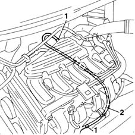

1080D26 idling engine oil vapour inlet line - r r
- Path
- Procedures > 10 ENGINE UNIT > 1080 EXHAUST EMISSION CONTROL SYSTEM > 1080D crankcase vapour/gas recirculation system > 1080D26 idling engine oil vapour inlet line - r r
- Kind
- repair procedure (removal / refitting; the operation number is the code)
- Applies to
- engines: 1.6 16v; all production periods
- Interactive page
- https://sloeber94.github.io/elrnDB-fMltpl/en/#/2891303
Applies to: engines: 1.6 16v; all production periods
 Removing
Removing
 Refitting
RefittingOpen the bonnet lid.
Disconnect the battery negative terminal.
1. Open the collars on the oil filler pipe and the air intake casing.
2. Remove the oil vapour intake pipe, withdrawing from the casing if necessary.

Applies to: engines: 1.6 16v; all production periods
Refitting
RemovingFit the oil intake pipe.
Connect the pipe to the air intake casing and the engine oil filler pipe.
Secure using new collars.
Connect the battery negative terminal.
Close the bonnet lid.